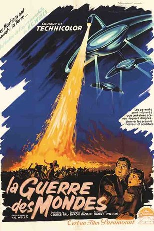

OSCAR
Жанр: Приключения с 1929г. по 1960г.

Название фильма
Год
Колличество оскаров
Табу
1931г
1
Шанхайский экспресс
1932г
1
Да здравствует Вилья!
1935г
4
Мятеж на Баунти
1936г
1
Энтони-неудачник
1937г
7
Потерянный горизонт
1938г
2
Приключения Робин Гуда
1939г
4
Волшебник страны Оз
1940г
1
Багдадский вор
1941г
4
По ком звонит колокол
1944г
1
Портрет Дориана Грея
1946г
3
Сокровища Сьерра Мадре
1949г
4
Копи царя Соломона
1951г
3
Самсон и Далила
1951г
2
Война миров
1954г
1
20000 лье под водой
1955г
2
Десять заповедей
1957г
4
Вокруг Света за 80 дней
1957г
5
Мост через реку Квай
1958г
7
Старик и море
1959г
1
Бен-Гур
1960г
11
Назад
Ильин Андрей Юрьевич ИКБО-20-19